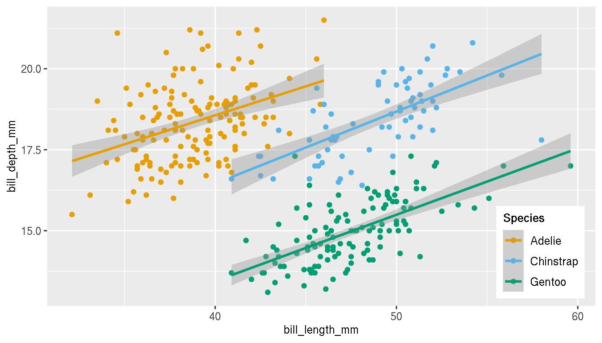
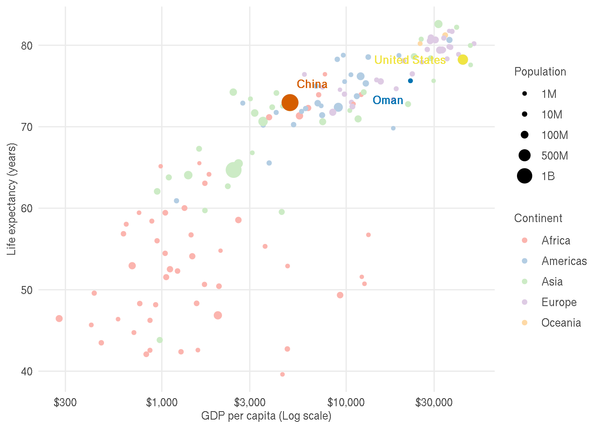
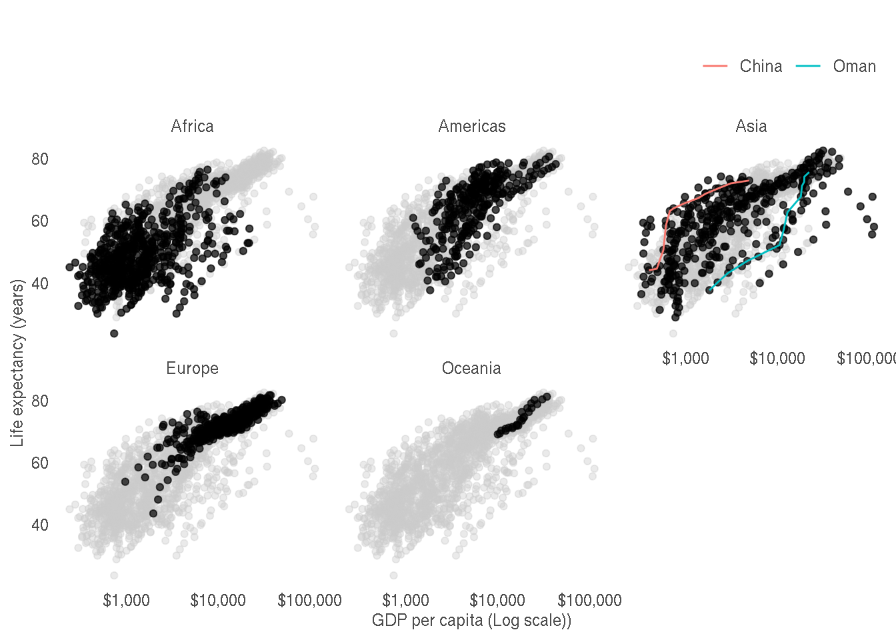
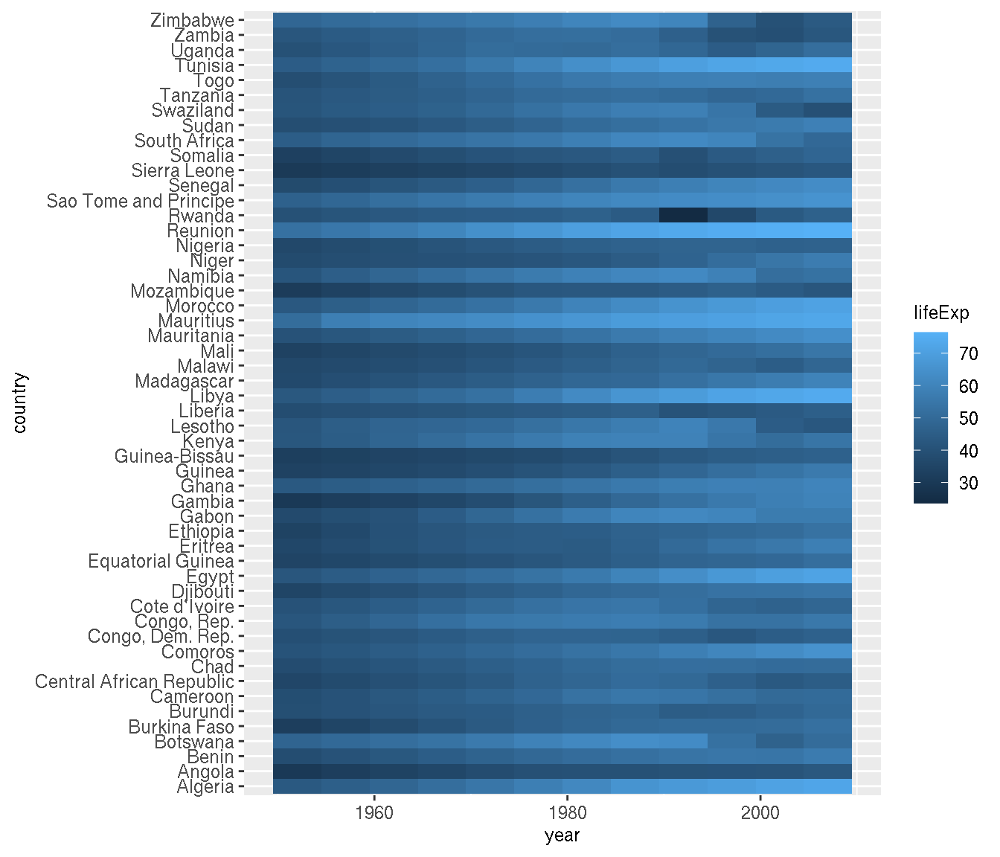
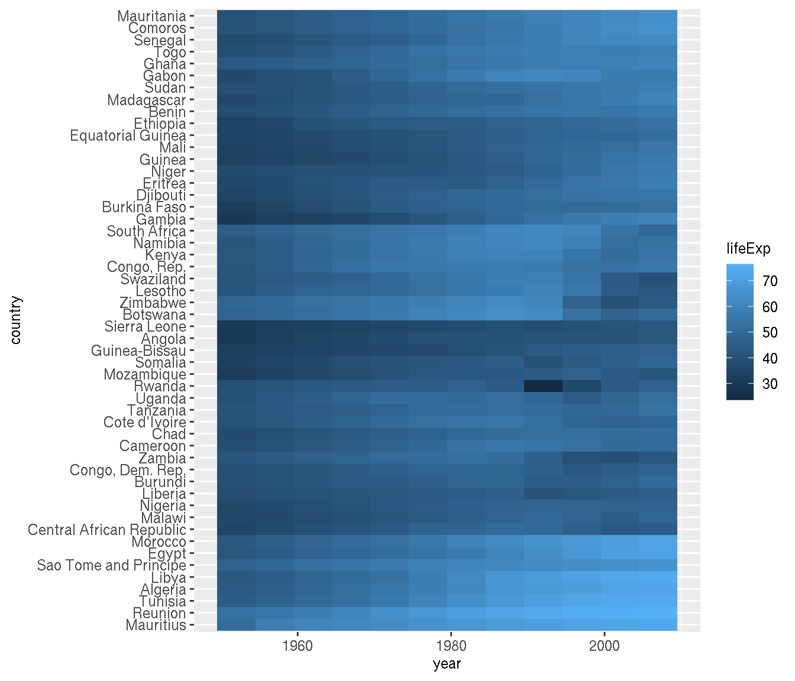
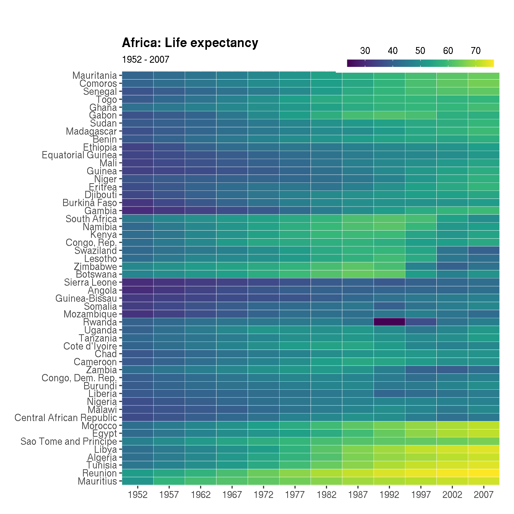
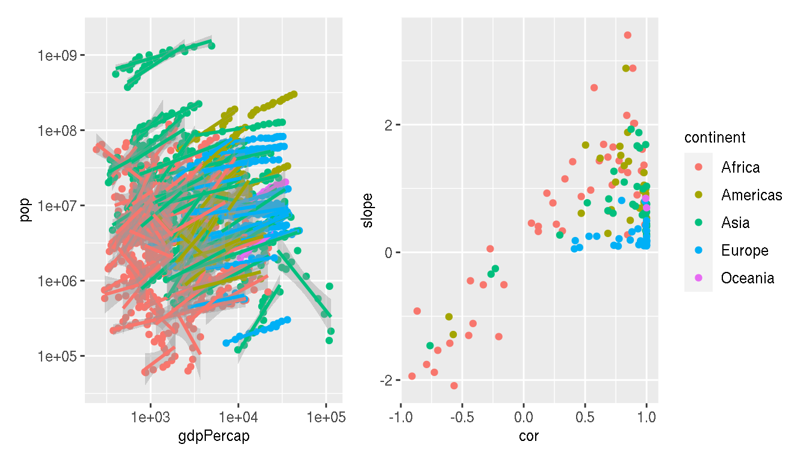

ggplot2: Beyond the Basics
RaukR 2021 • Advanced R for Bioinformatics
Roy Francis

This are practical exercises to compliment the lecture on ggplot2: Beyond the Basics. Attempt to solve the questions yourselves. If not, click the button to reveal the solution. There are likely multiple ways to solve the question. Answers mostly use functions from ggplot2, dplyr and tidyr. Additional packages are used occasionally.
library(ggplot2)
library(dplyr)
library(tidyr)
library(GGally)
library(ggrepel)
library(ggnewscale)
library(patchwork)1 Penguins
1.1 Install data
Install the penguins data set from palmerpenguins.
install.packages("palmerpenguins")
library(palmerpenguins)
data(penguins)Inspect the data set and make sure that the data types are correct and that you understand what the different variables are.
head(penguins)
str(penguins)## tibble [344 × 8] (S3: tbl_df/tbl/data.frame)
## $ species : Factor w/ 3 levels "Adelie","Chinstrap",..: 1 1 1 1 1 1 1 1 1 1 ...
## $ island : Factor w/ 3 levels "Biscoe","Dream",..: 3 3 3 3 3 3 3 3 3 3 ...
## $ bill_length_mm : num [1:344] 39.1 39.5 40.3 NA 36.7 39.3 38.9 39.2 34.1 42 ...
## $ bill_depth_mm : num [1:344] 18.7 17.4 18 NA 19.3 20.6 17.8 19.6 18.1 20.2 ...
## $ flipper_length_mm: int [1:344] 181 186 195 NA 193 190 181 195 193 190 ...
## $ body_mass_g : int [1:344] 3750 3800 3250 NA 3450 3650 3625 4675 3475 4250 ...
## $ sex : Factor w/ 2 levels "female","male": 2 1 1 NA 1 2 1 2 NA NA ...
## $ year : int [1:344] 2007 2007 2007 2007 2007 2007 2007 2007 2007 2007 ...1.2 Body mass and species
Is it possible to differentiate the penguin species based on body mass alone? What kind of plot would you use?
ggplot(penguins,aes(species,body_mass_g,col=species))+
geom_violin()1.3 All measurements and species
Are there any single continuous variable in this data set that can differentiate species? How would you visually explore this? What kind of plot would you use?
penguins %>%
tidyr::pivot_longer(where(is.numeric),names_to="metric",values_to="value") %>%
ggplot(aes(species,value,col=species))+
geom_violin()+
facet_wrap(~metric,scales="free")1.4 Bivariate scatterplots
Perhaps it’s easier to differentiate species based on two variables. Create pairwise scatterplots between all numeric variables and colour by species.
This can be done using ggplot2 alone, but in this example, we use a ggplot2 extension package GGally. This is similar to the base R function pairs().
select(penguins,species,bill_length_mm,bill_depth_mm,flipper_length_mm,body_mass_g) %>%
GGally::ggpairs(mapping = ggplot2::aes(color=species))Which two variables do you think best differentiates the species?
1.5 Bill length & bill depth
Create a scatterplot of bill length on x axis and bill depth on y axis.
p <- ggplot(penguins,aes(bill_length_mm,bill_depth_mm))+
geom_point()
pDraw a regression line to denote the relationship between bill length and bill depth.
p+geom_smooth(method="lm")What is the relationship between these two variables?
Recreate the previous figure and colour the points by species.
p <- ggplot(penguins,aes(bill_length_mm,bill_depth_mm,col=species))+
geom_point()+
geom_smooth(method="lm")
pWhat is the relationship between these two variables now?
Change the colours of the categories to these three custom colours: c("#E69F00","#56B4E9","#009E73"). Change the legend title from “species” to “Species” and in bold font face.
p <- p+scale_colour_manual(name="Species",values=c("#E69F00","#56B4E9","#009E73"))+
theme(legend.title = element_text(face="bold"))
pPosition the legend within the plot area as shown.

p <- p+theme(legend.position=c(0.90,0.18))
# legend justification can be set similarly
# legend.justification=c(0,1)Disable the legend, but keep the point colours.
p+theme(legend.position="none")1.6 Geographical distribution
What is the geographical distribution of the species? Create a plot to illustrate this.
ggplot(penguins,aes(species,island,color=species))+
geom_jitter()2 Gapminder
Install and attach the gapminder package.
library(gapminder)
g <- gapminderInspect the data set and make sure the data types are correct and that you understand what these variables are.
head(g)
str(g)## tibble [1,704 × 6] (S3: tbl_df/tbl/data.frame)
## $ country : Factor w/ 142 levels "Afghanistan",..: 1 1 1 1 1 1 1 1 1 1 ...
## $ continent: Factor w/ 5 levels "Africa","Americas",..: 3 3 3 3 3 3 3 3 3 3 ...
## $ year : int [1:1704] 1952 1957 1962 1967 1972 1977 1982 1987 1992 1997 ...
## $ lifeExp : num [1:1704] 28.8 30.3 32 34 36.1 ...
## $ pop : int [1:1704] 8425333 9240934 10267083 11537966 13079460 14880372 12881816 13867957 16317921 22227415 ...
## $ gdpPercap: num [1:1704] 779 821 853 836 740 ...How has the global life expectancy changed over time? What trend do you observe? Create a scatterplot of life expectancy over time and add a trend line.
ggplot(g,aes(year,lifeExp))+
geom_point()+
geom_smooth(method="lm")Does the life expectancy trend you previously identified, differ across continents?
ggplot(g,aes(year,lifeExp,col=continent))+
geom_point()+
geom_smooth(method="lm")Which continent has the highest variation in life expectancy in 2007?
g %>%
filter(year=="2007") %>%
group_by(continent) %>%
summarise(variance=var(lifeExp),sd=sd(lifeExp),diff=max(lifeExp)-min(lifeExp))
filter(g,year=="2007") %>%
ggplot(aes(x=lifeExp))+
geom_histogram()+
facet_wrap(~continent)Which are the top 10 countries by GDP per capita in 2007? Create a horizontal barplot.
g %>%
filter(year=="2007") %>%
slice_max(order_by=gdpPercap,n=10) %>%
ggplot(aes(x=reorder(country,gdpPercap),y=gdpPercap))+
geom_col()+
coord_flip()Create a plot of the top 5 countries in each continent with the highest life expectancy in 2007 facetted by continent.
g %>%
filter(year=="2007") %>%
group_by(continent) %>%
slice_max(order_by=lifeExp,n=5) %>%
ggplot(aes(x=reorder(country,-lifeExp),y=lifeExp))+
geom_col()+
facet_wrap(~continent,scales="free")+
theme(axis.text.x = element_text(angle=45,hjust=1))Create a plot of the top 10 countries in each continent with the highest change in life expectancy between 1952 and 2007, facetted by continent.
g %>%
filter(year %in% c("1952","2007")) %>%
select(year,country,continent,lifeExp) %>%
pivot_wider(names_from="year",values_from="lifeExp") %>%
mutate(diff=`2007`-`1952`) %>%
group_by(continent) %>%
slice_max(order_by=diff,n=10) %>%
ggplot(aes(x=reorder(country,diff)))+
geom_segment(aes(xend=reorder(country,diff),y=`1952`,yend=`2007`,group=country),size=0.7,colour="grey60")+
geom_point(aes(y=`1952`),colour="firebrick")+
geom_point(aes(y=`2007`),colour="steelblue")+
facet_wrap(~continent,scales="free_y")+
labs(x=NULL,y="Life expectancy (years)")+
coord_flip()+
theme(axis.text.x = element_text(angle=45,hjust=1))2.1 Life expectancy & GDP
What is the relationship between life expectancy and GDP per capita?
ggplot(g,aes(gdpPercap,lifeExp))+
geom_point()+
scale_x_log10()+
geom_smooth(method="lm")Using the same plot, filter to keep only values for the year 2007, remove the regression line, colour the points by continent and map the size of points to population.
filter(g,year=="2007") %>%
ggplot(aes(gdpPercap,lifeExp,size=pop,col=continent))+
geom_point()+
scale_x_log10() Annotate/label the following countries on the plot: United states, China, Oman
You can use for example; geom_label() or annotate(), but in this example, ggrepel::geom_text_repel() is used.
f <- filter(g,year=="2007",country %in% c("China","Oman","United States"))
filter(g,year=="2007") %>%
ggplot(aes(gdpPercap,lifeExp,col=continent))+
geom_point(aes(size=pop))+
ggrepel::geom_text_repel(data=f,aes(label=country),point.padding =15,min.segment.length=0)+
scale_x_log10() Colour the three highlighted countries (point and label) in new colours.
This is an example that uses multiple colour scales using the ggnewscale() package.
f <- filter(g,year=="2007",country %in% c("China","Oman","United States"))
filter(g,year=="2007") %>%
ggplot(aes(gdpPercap,lifeExp))+
geom_point(aes(size=pop,col=continent))+
ggnewscale::new_scale_color()+
ggnewscale::new_scale_fill()+
geom_point(data=f,aes(col=country,size=pop))+
ggrepel::geom_text_repel(data=f,aes(label=country,col=country),point.padding =15,min.segment.length=0,fontface="bold")+
scale_x_log10()+
scale_colour_brewer(type="qual")Try to customise the plot for production similar to that shown below.

The changes made are as follows:
- Legend titles, legend text and axes labels are improved
- X axis text is dollar formatted
- Custom colours are used for continents and highlighted points
- Theme is changed
- Panel border and minor gridlines are removed
- Axes tick marks are removed
- Text colour is lighter to decrease contrast
f <- filter(g,year=="2007",country %in% c("China","Oman","United States"))
filter(g,year=="2007") %>%
ggplot(aes(gdpPercap,lifeExp))+
geom_point(aes(size=pop,col=continent))+
scale_size_continuous(name="Population",
breaks=c(10^6,10*10^6,100*10^6,500*10^6,1000*10^6),
labels=c("1M","10M","100M","500M","1B"))+
scale_color_brewer(name="Continent",type="qual",palette=4)+
scale_x_log10(labels=scales::dollar_format(accuracy=1))+
ggnewscale::new_scale_color()+
ggnewscale::new_scale_fill()+
geom_point(data=f,aes(col=country,size=pop),show.legend=FALSE)+
ggrepel::geom_text_repel(data=f,aes(label=country,col=country),point.padding =15,min.segment.length=0,fontface="bold",show.legend=FALSE)+
scale_color_manual(values=rev(c("#56B4E9","#009E73","#F0E442","#0072B2","#D55E00")))+
labs(x="GDP per capita (Log scale)",y="Life expectancy (years)")+
theme_bw()+
theme(panel.border = element_blank(),
panel.grid.minor = element_blank(),
axis.ticks = element_blank(),
legend.title = element_text(colour="grey30"),
axis.text = element_text(colour="grey30"),
axis.title = element_text(colour="grey30"),
legend.text = element_text(colour="grey30"),
plot.title = element_text(colour="grey30"),
strip.text = element_text(colour="grey30"))2.2 Subplots & facetting
Create a scatterplot of GDP per capita on the x axis and life expectancy on the y axis. Facet by continent.
ggplot(g,aes(gdpPercap,lifeExp))+
geom_point()+
scale_x_log10()+
facet_wrap(~continent)Add the full data in the background (as light grey points) for reference.
ggplot(g,aes(gdpPercap,lifeExp))+
geom_point(data=select(g,-continent),col="grey80")+
geom_point()+
scale_x_log10()+
facet_wrap(~continent)Highlight the countries China and Oman on this plot. Connect these points as a line.
ggplot(g,aes(gdpPercap,lifeExp))+
geom_point(data=select(g,-continent),col="grey80")+
geom_point()+
geom_line(data=filter(g,country %in% c("China","Oman")),aes(col=country))+
scale_x_log10()+
facet_wrap(~continent)Customise the plot to production quality as shown below.

The changes made as as follows:
- X axis uses dollar formatting
- Axes labels are improved
- Axes tick marks are removed
- Panel border and gridlines are removed
- Strip panels are simplified
- Legend position is moved to top right
- Legend title is removed
- Theme is changed
- Text colour is lighter to decrease contrast
ggplot(g,aes(gdpPercap,lifeExp))+
geom_point(data=select(g,-continent),col="grey80",alpha=0.4)+
geom_point(alpha=0.7)+
geom_line(data=filter(g,country %in% c("China","Oman")),aes(col=country))+
scale_x_log10(labels=scales::dollar_format(accuracy=1))+
facet_wrap(~continent)+
labs(x="GDP per capita (Log scale))",y="Life expectancy (years)",title="")+
theme_bw()+
theme(panel.border = element_blank(),
panel.grid = element_blank(),
strip.background = element_blank(),
axis.ticks = element_blank(),
legend.position="top",
legend.justification="right",
legend.title = element_blank(),
axis.text = element_text(colour="grey30"),
axis.title = element_text(colour="grey30"),
legend.text = element_text(colour="grey30"),
plot.title = element_text(colour="grey30"),
strip.text = element_text(colour="grey30"))2.3 Africa life expectancy heatmap
Create a heatmap of life expectancy over time for African countries.
g %>%
filter(continent=="Africa") %>%
ggplot(aes(year,country,fill=lifeExp))+
geom_tile()
Order the countries by similar trends.
This is tricky. You need to cluster by rows. You can use the function hclust() to perform the clustering, but the data needs to be reformatted to be suitable as input.
g1 <- filter(na.omit(g),continent=="Africa")
# clustering
g2 <- g1 %>%
select(country,year,lifeExp) %>%
pivot_wider(names_from="year",values_from="lifeExp") %>%
tibble::column_to_rownames("country")
cn <- rownames(g2)[hclust(dist(g2))$order]
g1 %>%
mutate(country=factor(as.character(country),levels=cn)) %>%
ggplot(aes(year,country,fill=lifeExp))+
geom_tile()
Customise the heatmap to production quality as shown below:

The following adjustments have been made:
- Custom colour palette is used
- Title and subtitle is added
- X axis shows all years for which the data is available
- X and Y axes labels are hidden and bold title is added
- The colour bar legend is slimmer, horizontal and added to the top right
- Plot margin is increased on the top
cols <- viridisLite::viridis(n=10)
g1 <- filter(na.omit(g),continent=="Africa")
# clustering
g2 <- g1 %>%
select(country,year,lifeExp) %>%
pivot_wider(names_from="year",values_from="lifeExp") %>%
tibble::column_to_rownames("country")
cn <- rownames(g2)[hclust(dist(g2))$order]
g1 %>%
mutate(country=factor(as.character(country),levels=cn)) %>%
ggplot(aes(year,country,fill=lifeExp))+
geom_tile(colour="white")+
labs(x=NULL,y=NULL,title="Africa: Life expectancy",subtitle="1952 - 2007")+
scale_y_discrete(expand=c(0,0))+
scale_x_continuous(expand=c(0,0),breaks=unique(g1$year))+
scale_fill_gradientn(name=NULL,colors=cols,na.value="grey95",
guide=guide_colourbar(barheight=.5,barwidth=10,
label.position="top"))+
scale_y_discrete(breaks=cn)+
theme(legend.position=c(1,1.035),
legend.justification="right",
legend.direction="horizontal",
plot.title = element_text(face="bold"),
plot.margin=unit(c(1.3,0.5,0.5,0.5),"cm")) The fill colour is continuous. Change this to a categorical scale with 5 levels c("L","LM","M","MH","H"). And use the following fill colours: c("#fc8d59","#fee090","#e0f3f8","#91bfdb","#4575b4").
cols <- c("#fc8d59","#fee090","#e0f3f8","#91bfdb","#4575b4")
g1 <- filter(na.omit(g),continent=="Africa")
# clustering
g2 <- g1 %>%
select(country,year,lifeExp) %>%
pivot_wider(names_from="year",values_from="lifeExp") %>%
tibble::column_to_rownames("country")
cn <- rownames(g2)[hclust(dist(g2))$order]
g1 %>%
mutate(country=factor(as.character(country),levels=cn),
lifeExp=cut(lifeExp,breaks=5,labels=c("L","LM","M","MH","H"))) %>%
ggplot(aes(year,country,fill=lifeExp))+
geom_tile(colour="white")+
labs(x=NULL,y=NULL,title="Africa: Life expectancy",subtitle="1952 - 2007")+
scale_y_discrete(expand=c(0,0))+
scale_x_continuous(expand=c(0,0),breaks=unique(g1$year))+
scale_fill_manual(name=NULL,values=cols,na.value="grey95")+
scale_y_discrete(breaks=cn)+
theme(legend.position=c(1,1.035),
legend.justification="right",
legend.direction="horizontal",
plot.title = element_text(face="bold"),
plot.margin=unit(c(1.3,0.5,0.5,0.5),"cm"),
legend.key.size=unit(0.4,"cm"))Does this make it easier to interpret the information?
2.4 Population and GDP
Create a line graph showing mean population in each continent over time. Colour the lines by continent.
g %>%
group_by(year,continent) %>%
summarise(mean=mean(pop)) %>%
ggplot(aes(x=year,y=mean,col=continent))+
geom_line()What is the relationship between GDP per capita and population?
g %>%
ggplot(aes(gdpPercap,pop))+
geom_point(show.legend=FALSE)+
geom_smooth(method="lm")+
scale_x_log10()+
scale_y_log10() What happens if you look at this relationship by country? Colour by continent and save the plot to a variable p1.
p1 <- g %>%
ggplot(aes(gdpPercap,pop,group=country,col=continent))+
geom_point(show.legend=FALSE)+
geom_smooth(method="lm",show.legend=F)+
scale_x_log10()+
scale_y_log10()
p1Calculate the correlation and slope of these relationships for each country. Use log10 scale for both metrics.
g1 <- g %>%
mutate(gdpPercap=log10(gdpPercap),pop=log10(pop)) %>%
group_by(continent,country) %>%
summarise(cor=cor(gdpPercap,pop,method="spearman"),
slope=as.numeric(lm(pop~gdpPercap,cur_data())$coefficients[2]))
head(g1) Create a scatterplot between correlation and slope. Colour by continent. Save this plot to a variable p2.
p2 <- ggplot(g1,aes(cor,slope,col=continent))+
geom_point()
p2Are there any interesting insights from this plot? What can you infer?
Can you summarise these messy results? What is the most common direction and strength of relationship between population and GDP per capita across countries? Is this trend consistent by continent? These are not plots.
g1 %>%
ungroup() %>%
summarise(median_cor=median(cor),median_slope=median(abs(slope)))
g1 %>%
group_by(continent) %>%
summarise(median_cor=median(cor),median_slope=median(abs(slope))) Combine the two previously saved plots p1 and p2 side by side using patchwork. Explore how these commands differ.
p1+p2
p1|p2
p1/p2
wrap_plots(p1,p2)
How would you move the legend to the top center and horizontal so that it is shared between the two plots?
wrap_plots(p1,p2,guides="collect")&
theme(legend.position="top",
legend.direction="horizontal")3 Session info
## R version 4.0.2 (2020-06-22)
## Platform: x86_64-conda_cos6-linux-gnu (64-bit)
## Running under: Ubuntu 20.04.2 LTS
##
## Matrix products: default
## BLAS/LAPACK: /home/roy/miniconda3/envs/r-4.0/lib/libopenblasp-r0.3.10.so
##
## locale:
## [1] LC_CTYPE=en_GB.UTF-8 LC_NUMERIC=C LC_TIME=en_GB.UTF-8
## [4] LC_COLLATE=en_GB.UTF-8 LC_MONETARY=en_GB.UTF-8 LC_MESSAGES=en_GB.UTF-8
## [7] LC_PAPER=en_GB.UTF-8 LC_NAME=C LC_ADDRESS=C
## [10] LC_TELEPHONE=C LC_MEASUREMENT=en_GB.UTF-8 LC_IDENTIFICATION=C
##
## attached base packages:
## [1] stats graphics grDevices utils datasets methods base
##
## other attached packages:
## [1] patchwork_1.1.1 gapminder_0.3.0 fontawesome_0.2.1 captioner_2.2.3
## [5] bookdown_0.22 knitr_1.33 ggnewscale_0.4.5 ggrepel_0.9.1
## [9] GGally_2.1.1 tidyr_1.1.3 dplyr_1.0.6 palmerpenguins_0.1.0
## [13] ggplot2_3.3.3
##
## loaded via a namespace (and not attached):
## [1] progress_1.2.2 tidyselect_1.1.1 xfun_0.23 bslib_0.2.5.1
## [5] purrr_0.3.4 splines_4.0.2 lattice_0.20-44 colorspace_2.0-1
## [9] vctrs_0.3.8 generics_0.1.0 htmltools_0.5.1.1 viridisLite_0.4.0
## [13] yaml_2.2.1 mgcv_1.8-36 utf8_1.2.1 rlang_0.4.11
## [17] jquerylib_0.1.4 pillar_1.6.1 glue_1.4.2 withr_2.4.2
## [21] DBI_1.1.1 RColorBrewer_1.1-2 lifecycle_1.0.0 plyr_1.8.6
## [25] stringr_1.4.0 munsell_0.5.0 gtable_0.3.0 evaluate_0.14
## [29] labeling_0.4.2 fansi_0.5.0 highr_0.9 Rcpp_1.0.6
## [33] scales_1.1.1 jsonlite_1.7.2 farver_2.1.0 hms_1.1.0
## [37] digest_0.6.27 stringi_1.6.2 grid_4.0.2 cli_2.5.0
## [41] tools_4.0.2 magrittr_2.0.1 sass_0.4.0 tibble_3.1.2
## [45] crayon_1.4.1 pkgconfig_2.0.3 ellipsis_0.3.2 Matrix_1.3-4
## [49] prettyunits_1.1.1 assertthat_0.2.1 rmarkdown_2.8 reshape_0.8.8
## [53] rstudioapi_0.13 R6_2.5.0 nlme_3.1-152 compiler_4.0.2Built on: 10-Jun-2021 at 22:44:49.
2021 • SciLifeLab • NBIS • RaukR